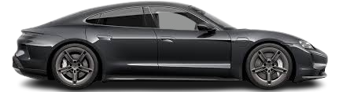

The Porsche Taycan is Porsche’s first all-electric car, combining high performance with luxury. It comes in several versions like the Taycan 4S, GTS, Turbo, and Turbo S, with up to 750 hp and 0–60 mph in 2.4 seconds (Turbo S).
It uses an 800-volt system for ultra-fast charging and has a range of 200–300 miles depending on the model. The handling is sharp, true to Porsche's sports car heritage, and the interior is tech-heavy with up to four digital displays.